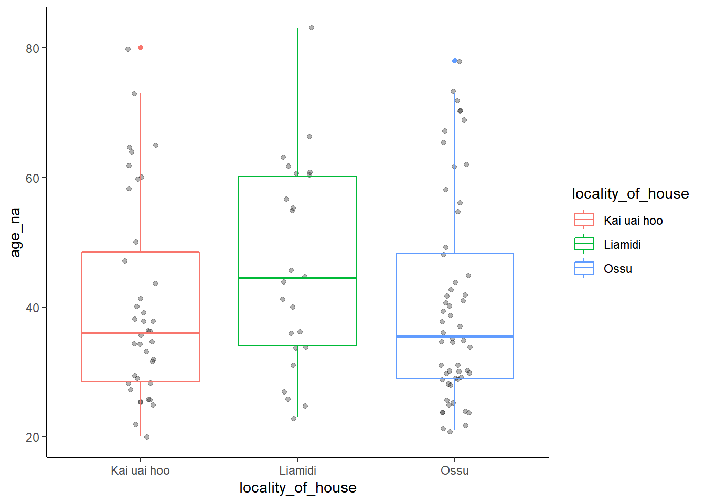
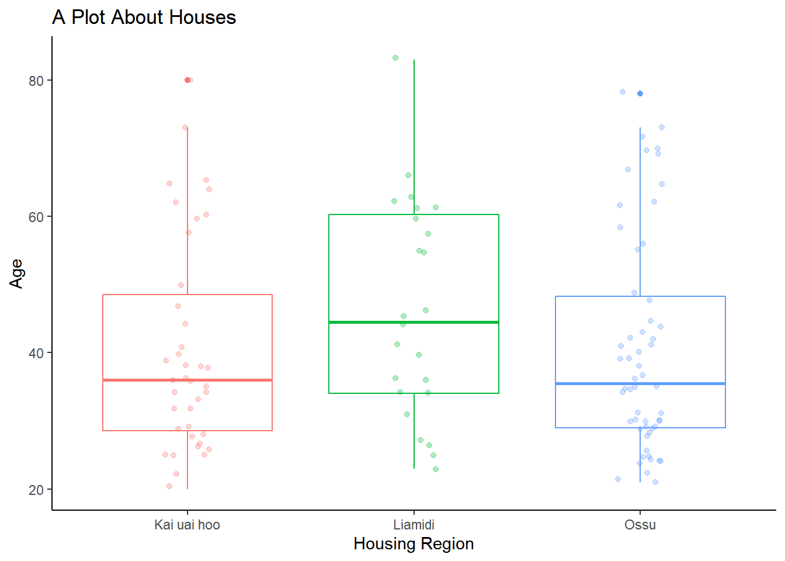
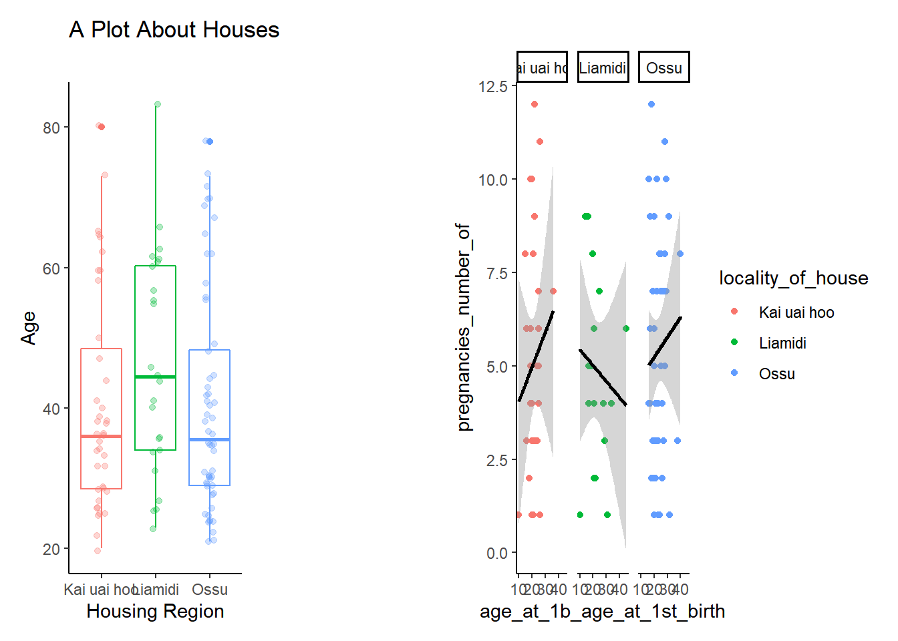

some_variable <- 10 * 20 * 3 * 10
some_variable[1] 6000Anything you write, will be treated as text.
Unless it’s inside backticks.
some_variable <- 10 * 20 * 3 * 10
some_variable[1] 6000The result of our previous work is 6000
Another example is: 2.121
Below I am downloading the data file to work on.
# download.file(
# "https://bradyajohnston.github.io/2022-07-04-R-workshop/TL_database.xlsx", "TL_database.xlsx")-- Attaching packages --------------------------------------- tidyverse 1.3.1 --v ggplot2 3.3.5 v purrr 0.3.4
v tibble 3.1.6 v dplyr 1.0.8
v tidyr 1.2.0 v stringr 1.4.0
v readr 2.1.2 v forcats 0.5.1Warning: package 'tibble' was built under R version 4.1.3Warning: package 'tidyr' was built under R version 4.1.2Warning: package 'readr' was built under R version 4.1.3Warning: package 'dplyr' was built under R version 4.1.3-- Conflicts ------------------------------------------ tidyverse_conflicts() --
x dplyr::filter() masks stats::filter()
x dplyr::lag() masks stats::lag()# library(readxl)
df_tl <- readxl::read_excel("TL_database.xlsx")
df_tl_clean <- df_tl %>%
slice(-1, -2) %>%
select(-1)Additional setup chunk.
# install.packages("janitor")df <- df_tl_clean %>%
janitor::clean_names()
head(df)# A tibble: 6 x 11
respondent_female_id locality_of_house age_na status_1_oldest education_highe~
<chr> <chr> <chr> <chr> <chr>
1 101 Ossu 78 1 None or some El~
2 201 Ossu 69 1 None or some El~
3 301 Ossu 35 1 None or some El~
4 401 Ossu 42 1 Elementary
5 502 Ossu 26 2 Senior High
6 602 Ossu 30 2 Senior High
# ... with 6 more variables: age_at_1b_age_at_1st_birth <chr>,
# pregnancies_number_of <chr>, births_number_of <chr>,
# electricity_connected <chr>, adopted_children_in_household <chr>,
# wage_male_head_of_hh <chr>We are going to change them back to numbers, the way they should be.
tibble [122 x 11] (S3: tbl_df/tbl/data.frame)
$ respondent_female_id : chr [1:122] "101" "201" "301" "401" ...
$ locality_of_house : chr [1:122] "Ossu" "Ossu" "Ossu" "Ossu" ...
$ age_na : chr [1:122] "78" "69" "35" "42" ...
$ status_1_oldest : chr [1:122] "1" "1" "1" "1" ...
$ education_highest_achieved : chr [1:122] "None or some Elementary" "None or some Elementary" "None or some Elementary" "Elementary" ...
$ age_at_1b_age_at_1st_birth : chr [1:122] NA "28" "20" "25" ...
$ pregnancies_number_of : chr [1:122] "15" "8" "6" "7" ...
$ births_number_of : chr [1:122] "15" "5" "4" "7" ...
$ electricity_connected : chr [1:122] "Yes" "Yes" "Yes" "Yes" ...
$ adopted_children_in_household: chr [1:122] "Present" "Present" "None" "None" ...
$ wage_male_head_of_hh : chr [1:122] "Wages" "Wages" "No Wages" "No Wages" ...df %>%
mutate(
respondent_female_id = as.numeric(respondent_female_id)
) %>%
str()tibble [122 x 11] (S3: tbl_df/tbl/data.frame)
$ respondent_female_id : num [1:122] 101 201 301 401 502 602 701 702 703 801 ...
$ locality_of_house : chr [1:122] "Ossu" "Ossu" "Ossu" "Ossu" ...
$ age_na : chr [1:122] "78" "69" "35" "42" ...
$ status_1_oldest : chr [1:122] "1" "1" "1" "1" ...
$ education_highest_achieved : chr [1:122] "None or some Elementary" "None or some Elementary" "None or some Elementary" "Elementary" ...
$ age_at_1b_age_at_1st_birth : chr [1:122] NA "28" "20" "25" ...
$ pregnancies_number_of : chr [1:122] "15" "8" "6" "7" ...
$ births_number_of : chr [1:122] "15" "5" "4" "7" ...
$ electricity_connected : chr [1:122] "Yes" "Yes" "Yes" "Yes" ...
$ adopted_children_in_household: chr [1:122] "Present" "Present" "None" "None" ...
$ wage_male_head_of_hh : chr [1:122] "Wages" "Wages" "No Wages" "No Wages" ...df <- df %>%
mutate(across(
.cols = c(
respondent_female_id,
age_na,
status_1_oldest,
age_at_1b_age_at_1st_birth,
pregnancies_number_of,
births_number_of
),
.fns = as.numeric
))
str(df)tibble [122 x 11] (S3: tbl_df/tbl/data.frame)
$ respondent_female_id : num [1:122] 101 201 301 401 502 602 701 702 703 801 ...
$ locality_of_house : chr [1:122] "Ossu" "Ossu" "Ossu" "Ossu" ...
$ age_na : num [1:122] 78 69 35 42 26 30 70 43 29 62 ...
$ status_1_oldest : num [1:122] 1 1 1 1 2 2 1 2 3 1 ...
$ education_highest_achieved : chr [1:122] "None or some Elementary" "None or some Elementary" "None or some Elementary" "Elementary" ...
$ age_at_1b_age_at_1st_birth : num [1:122] NA 28 20 25 17 23 28 26 24 40 ...
$ pregnancies_number_of : num [1:122] 15 8 6 7 6 4 5 7 1 8 ...
$ births_number_of : num [1:122] 15 5 4 7 6 3 5 5 1 8 ...
$ electricity_connected : chr [1:122] "Yes" "Yes" "Yes" "Yes" ...
$ adopted_children_in_household: chr [1:122] "Present" "Present" "None" "None" ...
$ wage_male_head_of_hh : chr [1:122] "Wages" "Wages" "No Wages" "No Wages" ...summary(df) respondent_female_id locality_of_house age_na status_1_oldest
Min. : 101 Length:122 Min. :-99.00 Min. :1.00
1st Qu.: 2626 Class :character 1st Qu.: 29.00 1st Qu.:1.00
Median : 5251 Mode :character Median : 37.50 Median :1.00
Mean : 5380 Mean : 41.05 Mean :1.15
3rd Qu.: 8176 3rd Qu.: 55.75 3rd Qu.:1.00
Max. :11001 Max. : 83.00 Max. :3.00
NA's :2
education_highest_achieved age_at_1b_age_at_1st_birth pregnancies_number_of
Length:122 Min. :-99.00 Min. : 0.000
Class :character 1st Qu.: 19.00 1st Qu.: 2.000
Mode :character Median : 22.00 Median : 5.000
Mean : 21.48 Mean : 5.016
3rd Qu.: 25.25 3rd Qu.: 7.000
Max. : 45.00 Max. :15.000
NA's :22
births_number_of electricity_connected adopted_children_in_household
Min. : 0.000 Length:122 Length:122
1st Qu.: 2.000 Class :character Class :character
Median : 4.000 Mode :character Mode :character
Mean : 4.598
3rd Qu.: 7.000
Max. :15.000
wage_male_head_of_hh
Length:122
Class :character
Mode :character
Lets have a look at our data, to see if it’s relevant to do some stats on.
df %>%
filter(
age_na > 0,
!is.na(locality_of_house)
) %>%
ggplot(aes(
x = locality_of_house,
y = age_na
)) +
geom_jitter(width = 0.1, alpha = 0.3) +
geom_boxplot(
mapping = aes(colour = locality_of_house),
fill = "transparent",
#colour = "tomato"
) +
theme_classic()
plot_1 <- df %>%
filter(
age_na > 0,
!is.na(locality_of_house)
) %>%
ggplot(aes(
x = locality_of_house,
y = age_na,
colour = locality_of_house
)) +
geom_jitter(width = 0.1, alpha = 0.3) +
geom_boxplot(
fill = "transparent",
#colour = "tomato"
) +
theme_classic() +
guides(colour = "none") +
labs(
x = "Housing Region",
y = "Age",
title = "A Plot About Houses"
)
plot_1
df %>%
filter(age_at_1b_age_at_1st_birth > 0) %>%
ggplot(aes(
age_at_1b_age_at_1st_birth,
pregnancies_number_of,
colour = locality_of_house
)) +
geom_point() +
geom_smooth(mapping = aes(group = locality_of_house),
method = "lm",
colour = "black") +
facet_wrap(~locality_of_house) +
theme_classic() -> plot_2
patchwork::wrap_plots(plot_1, patchwork::plot_spacer(), plot_2)`geom_smooth()` using formula 'y ~ x'
# +
# geom_smooth(method = "lm") +
# facet_wrap(~locality_of_house) +
# theme_classic() +
# guides(colour = "none") -> plot_2
#
# patchwork::wrap_plots(plot_1, plot_2) +
# patchwork::plot_annotation(tag_levels = "A")
# save the plots to disk
ggsave("my_plot.pdf", width = 20, height = 10, units = "cm")`geom_smooth()` using formula 'y ~ x'ggsave("my_plot.png", width = 20, height = 10, units = "cm", dpi = 600)`geom_smooth()` using formula 'y ~ x'# open up the file using 'browseURL()`
# browseURL("my_plot.pdf")